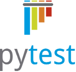

Archive for the ‘metaprogramming’ Category
Going beyond codes of conduct
The other possibility is to treat “incidents” as an opportunity to engage with underlying reasons and questions. Here are some of mine when it comes to the believe that one gender is superior to another, in the context of the programming communities i am connected with:
- To begin with, why are many male programmers working 40 hours a week while their wife cares at home for children? See Traditional family models in the IT and Python world for more on this question.
- How does it come to biases: When i imagine a “genius”, who do i think of? When i hear “keynote speaker” whom do i envision? At PyUnconf 2014 in Hamburg i discussed relations between centralized technical systems and normative thinking. Often, these norms are felt as “natural” or “true”. But we are not only producing thoughts, our thoughts are products of cultural mass processes and less individual than they feel.
- Who is speaking in the name of a community? Who is the “we”? And if “everyone” can participate, who actually participates? Who gets to decide, who defines what is being talked about and how? Which norms and values play a role in the communication around all these issues?
- Why are most programming communities composed of a majority of white males? Biology? Or is it the result of centuries old patriarchies and colonialisms in action? When you try to “undo” this, do you just impose some rules by which everyone should behave? Or do you actively work to raise awareness, discuss some of the fundamentals and inherited impregnations?
Written by holger krekel
April 9, 2015 at 10:42 am
Posted in metaprogramming
Tagged with code of conduct, communication, politics
pytest development reorganization, adopt pytest month!
Today I went live with shifting pytest development to be more community driven. During a discussion at FOSDEM 2015 a significant subset of pytest contributors decided to create two organisations at github and bitbucket and shift core pytest and several plugins to them, on the initial suggestion of Anatoly Bubenkoff. See the new pytest contribution page for details. The teams currently have a dozen members and we are looking forward to integrate more contributors which all get full access and commit rights to all repositories, can push to the website and release to pypi.
Also at FOSDEM 2015, core pytest contributor Brianna Laugher suggested and started the Adopt pytest month initiative which will bring together pytest contributors, users and Open Source projects interested to use pytest in their project. Many pytest contributors and practioners will participate which means you get excellent support for bringing your testing efforts up to speed with pytest.
The pytest team is also working towards a pytest-2.7 release, take a peak at the current changelog. If you like to get something in, now is a good time to submit a pull request. Or, if you are working with a company you may contract merlinux which in turns contracts contributors to quickly resolve any issues you might have or organises in-house training or consulting. Apart from the direct benefit for your company it’s also a good way to support a sustained and ever-improving testing infrastructure commons for Python (pytest, tox, devpi projects in particular).
pytest core contributors at FOSDEM 2015 in Bruxelles, left to right: Andreas Pelme, Floris Bruynooghe, Ronny Pfannschmidt, Brianna Laugher, Holger Krekel, Anatoly Bubenkoff
Written by holger krekel
February 27, 2015 at 2:56 pm
Posted in metaprogramming
Running tests against multiple devices/resources (in parallel)
How to best distribute tests against multiple devices or resources with pytest? This interesting question came up during my training in Lviv (Ukraine) at an embedded systems company. Distributing tests to processes can serve two purposes:
- running the full test suite against each device to verify they all work according to the test specification
- distributing the test load to several devices of the same type in order to minimize overall test execution time.
The solution to both problems is easy if you use two pytest facilities:
- the general fixture mechanism: we write a fixture function which provides a device object which is pre-configured for use in tests.
- the pytest-xdist plugin: we use it to run subprocesses and communicate configuration data for the device fixture from the master process to the subprocesses.
To begin with, let’s configure three devices that are each reachable by a separate IP address. We create a list of ip addresses in a file:
# content of devices.json ["192.168.0.1", "192.168.0.2", "192.168.0.3"]
We now create a local pytest plugin which reads the configuration data, implements a per-process device fixture and the master-to-slave communication to configure each subprocess according to our device list:
# content of conftest.py
import pytest
def read_device_list():
import json
with open("devices.json") as f:
return json.load(f)
def pytest_configure(config):
# read device list if we are on the master
if not hasattr(config, "slaveinput"):
config.iplist = read_device_list()
def pytest_configure_node(node):
# the master for each node fills slaveinput dictionary
# which pytest-xdist will transfer to the subprocess
node.slaveinput["ipadr"] = node.config.iplist.pop()
@pytest.fixture(scope="session")
def device(request):
slaveinput = getattr(request.config, "slaveinput", None)
if slaveinput is None: # single-process execution
ipadr = read_device_list()[0]
else: # running in a subprocess here
ipadr = slaveinput["ipadr"]
return Device(ipadr)
class Device:
def __init__(self, ipadr):
self.ipadr = ipadr
def __repr__(self):
return "<Device ip=%s>" % (self.ipadr)
We can now write tests that simply make use of the device fixture by using its name as an argument to a test function:
# content of test_device.py
import time
def test_device1(device):
time.sleep(2) # simulate long test time
assert 0, device
def test_device2(device):
time.sleep(2) # simulate long test time
assert 0, device
def test_device3(device):
time.sleep(2) # simulate long test time
assert 0, device
Let’s first run the tests in a single-process, only using a single device (also using some reporting option to shorten output):
$ py.test test_device.py -q --tb=line FFF ================================= FAILURES ================================= /tmp/doc-exec-9/test_device.py:5: AssertionError: <Device ip=192.168.0.1> /tmp/doc-exec-9/test_device.py:9: AssertionError: <Device ip=192.168.0.1> /tmp/doc-exec-9/test_device.py:13: AssertionError: <Device ip=192.168.0.1> 3 failed in 6.02 seconds
As to be expected, we get six seconds execution time (3 tests times 2 seconds each).
Now let’s run the same tests in three subprocesses, each using a different device:
$ py.test --tx 3*popen --dist=each test_device.py -q --tb=line gw0 I / gw1 I / gw2 I gw0 [3] / gw1 [3] / gw2 [3] scheduling tests via EachScheduling FFFFFFFFF ================================= FAILURES ================================= E AssertionError: <Device ip=192.168.0.1> E AssertionError: <Device ip=192.168.0.3> E AssertionError: <Device ip=192.168.0.2> E AssertionError: <Device ip=192.168.0.1> E AssertionError: <Device ip=192.168.0.3> E AssertionError: <Device ip=192.168.0.2> E AssertionError: <Device ip=192.168.0.3> E AssertionError: <Device ip=192.168.0.1> E AssertionError: <Device ip=192.168.0.2> 9 failed in 6.52 seconds
We just created three subprocesses each running three tests. Instead of 18 seconds execution time (9 tests times 2 seconds per test) we roughly got 6 seconds, a 3-times speedup. Each subprocess ran in parallel three tests against “its” device.
Let’s also run with load-balancing, i.e. distributing the tests against three different devices so that each device executes one test:
$ py.test --tx 3*popen --dist=load test_device.py -q --tb=line gw0 I / gw1 I / gw2 I gw0 [3] / gw1 [3] / gw2 [3] scheduling tests via LoadScheduling FFF ================================= FAILURES ================================= E AssertionError: <Device ip=192.168.0.3> E AssertionError: <Device ip=192.168.0.2> E AssertionError: <Device ip=192.168.0.1> 3 failed in 2.50 seconds
Here each test runs in a separate process against its device, overall more than halfing the test time compared to what it would take in a single-process (3*2=6 seconds). If we had many more tests than subproceses than load-scheduling would distribute tests in real-time to the process which has finished executing other tests.
Note that the tests themselves do not need to be aware of the distribution mode. All configuration and setup is contained in the conftest.py file.
To summarize the behaviour of the hooks and fixtures in conftest.py:
- pytest_configure(config) is called both on the master and each subprocess. We can distinguish where we are by checking for presence of config.slaveinput.
- pytest_configure_node(node) is called for each subprocess. We can fill the slaveinput dictionary which the subprocess slave can then read via its config.slaveinput dictionary.
- the device fixture only is called when a test needs it. In distributed mode, tests are only collected and executed in a subprocess. In non-distributed mode, tests are run single-process. The Device class is just a stub — it will need to grow methods for actual device communication. The tests can then simply use those device methods.
I’d like to thank Anton and the participants of my three day testing training in Lviv (Ukraine) for bringing up this and many other interesting questions.
I am giving another such professional testing course 25-27th November at the Python Academy in Leipzig. There are still two seats available. Me and other trainers can also be booked for on-site/in-house trainings worldwide.
Written by holger krekel
November 12, 2013 at 7:43 am
Posted in metaprogramming, testing
Tagged with device, distribution, example, pytest, test, training
Defeating Sauron with the “Trust on first use” principle
 Gandalf
and Frodo did the right thing when they went for destroying the power
of the all-seeing eye. The idea of a central power that knows everything
undermines our ability to self-govern and influence important changes
in society, it undermines a foundation of democracy.
Gandalf
and Frodo did the right thing when they went for destroying the power
of the all-seeing eye. The idea of a central power that knows everything
undermines our ability to self-govern and influence important changes
in society, it undermines a foundation of democracy.
As against Sauron, it seems like an impossible fight to try to protect our communication against present-day espionage cartels. I see glimmers of hope, though. Certainly not much in the political space. Somehow our politicians are themselves too interested to use the eye on select targets — even if only the ones which Sauron allows them to see.
My bigger hope lies with technologists who are working on designing better communication systems. We still have time during which we can reduce Sauron’s sight. But to begin with, how do we prevent passive spying attacks against our communications?
A good part of the answer lies in the Trust on first use principle. The mobile Threema application is a good example: when two people first connect with each other, they exchange communication keys and afterwards use it to perform end-to-end encrypted communications. The key exchange can happen in full sight of the eye, yet the subsequent communication will be illegible. No question, the eye can notice that the two are communicating with unknown content but if too many of them do that this fact becomes less significant.
Of course, the all-seeying eye can send a Nazgul to stand in the middle of the communication to deceive both ends and listen in. But it needs to do so from the beginning and continously if it wants to avoid the victims from noticing. And those two can at any time meet to verify their encryption keys and would realize there was a Nazgul-in-the-middle attack.
By contrast, both SSL and GPG operate with a trust model where we can hear Sauron’s distant laughter. The one is tied to a thousand or so “root authorities”, which can be easily reined in as need be. The other mandates and propagates such a high level of initial mistrust between us that we find it simply too inconvenient to use.
Societies and our social interactions are fundamentally build on trust. Let’s design systems which build on initial trust and which help to identify after-the-fact when it was compromised. If the eye has bad dreams, then i am sure massively deployed trust-on-first-use communication systems are among them.
Written by holger krekel
October 26, 2013 at 7:04 am
Posted in metaprogramming, politics
Tagged with communication, encryption, gpg, sauron, ssl
pytest-2.4.0: new fixture features, many bug fixes
- new yield-style fixtures pytest.yield_fixture, allowing to use existing with-style context managers in fixture functions.
- improved pdb support: import pdb ; pdb.set_trace() now works without requiring prior disabling of stdout/stderr capturing. Also the --pdb options works now on collection and internal errors and we introduced a new experimental hook for IDEs/plugins to intercept debugging: pytest_exception_interact(node, call, report).
- shorter monkeypatch variant to allow specifying an import path as a target, for example: monkeypatch.setattr("requests.get", myfunc)
- better unittest/nose compatibility: all teardown methods are now only called if the corresponding setup method succeeded.
- integrate tab-completion on command line options if you have argcomplete configured.
- allow boolean expression directly with skipif/xfail if a “reason” is also specified.
- a new hook pytest_load_initial_conftests allows plugins like pytest-django to influence the environment before conftest files import django.
- reporting: color the last line red or green depending if failures/errors occured or everything passed.
The documentation has been updated to accomodate the changes, see http://pytest.org
To install or upgrade pytest:
pip install -U pytest # or easy_install -U pytest
Many thanks to all who helped, including Floris Bruynooghe, Brianna Laugher, Andreas Pelme, Anthon van der Neut, Anatoly Bubenkoff, Vladimir Keleshev, Mathieu Agopian, Ronny Pfannschmidt, Christian Theunert and many others.
may nice fixtures and passing tests be with you,
holger krekel
Changes between 2.3.5 and 2.4
known incompatibilities:
- if calling –genscript from python2.7 or above, you only get a standalone script which works on python2.7 or above. Use Python2.6 to also get a python2.5 compatible version.
- all xunit-style teardown methods (nose-style, pytest-style, unittest-style) will not be called if the corresponding setup method failed, see issue322 below.
- the pytest_plugin_unregister hook wasn’t ever properly called and there is no known implementation of the hook – so it got removed.
- pytest.fixture-decorated functions cannot be generators (i.e. use yield) anymore. This change might be reversed in 2.4.1 if it causes unforeseen real-life issues. However, you can always write and return an inner function/generator and change the fixture consumer to iterate over the returned generator. This change was done in lieu of the new pytest.yield_fixture decorator, see below.
new features:
-
experimentally introduce a new pytest.yield_fixture decorator which accepts exactly the same parameters as pytest.fixture but mandates a yield statement instead of a return statement from fixture functions. This allows direct integration with “with-style” context managers in fixture functions and generally avoids registering of finalization callbacks in favour of treating the “after-yield” as teardown code. Thanks Andreas Pelme, Vladimir Keleshev, Floris Bruynooghe, Ronny Pfannschmidt and many others for discussions.
-
allow boolean expression directly with skipif/xfail if a “reason” is also specified. Rework skipping documentation to recommend “condition as booleans” because it prevents surprises when importing markers between modules. Specifying conditions as strings will remain fully supported.
-
reporting: color the last line red or green depending if failures/errors occured or everything passed. thanks Christian Theunert.
-
make “import pdb ; pdb.set_trace()” work natively wrt capturing (no “-s” needed anymore), making pytest.set_trace() a mere shortcut.
-
fix issue181: –pdb now also works on collect errors (and on internal errors) . This was implemented by a slight internal refactoring and the introduction of a new hook pytest_exception_interact hook (see next item).
-
fix issue341: introduce new experimental hook for IDEs/terminals to intercept debugging: pytest_exception_interact(node, call, report).
-
new monkeypatch.setattr() variant to provide a shorter invocation for patching out classes/functions from modules:
monkeypatch.setattr(“requests.get”, myfunc)
will replace the “get” function of the “requests” module with myfunc.
-
fix issue322: tearDownClass is not run if setUpClass failed. Thanks Mathieu Agopian for the initial fix. Also make all of pytest/nose finalizer mimick the same generic behaviour: if a setupX exists and fails, don’t run teardownX. This internally introduces a new method “node.addfinalizer()” helper which can only be called during the setup phase of a node.
-
simplify pytest.mark.parametrize() signature: allow to pass a CSV-separated string to specify argnames. For example: pytest.mark.parametrize("input,expected", [(1,2), (2,3)]) works as well as the previous: pytest.mark.parametrize(("input", "expected"), ...).
-
add support for setUpModule/tearDownModule detection, thanks Brian Okken.
-
integrate tab-completion on options through use of “argcomplete”. Thanks Anthon van der Neut for the PR.
-
change option names to be hyphen-separated long options but keep the old spelling backward compatible. py.test -h will only show the hyphenated version, for example “–collect-only” but “–collectonly” will remain valid as well (for backward-compat reasons). Many thanks to Anthon van der Neut for the implementation and to Hynek Schlawack for pushing us.
-
fix issue 308 – allow to mark/xfail/skip individual parameter sets when parametrizing. Thanks Brianna Laugher.
-
call new experimental pytest_load_initial_conftests hook to allow 3rd party plugins to do something before a conftest is loaded.
Bug fixes:
- fix issue358 – capturing options are now parsed more properly by using a new parser.parse_known_args method.
- pytest now uses argparse instead of optparse (thanks Anthon) which means that “argparse” is added as a dependency if installing into python2.6 environments or below.
- fix issue333: fix a case of bad unittest/pytest hook interaction.
- PR27: correctly handle nose.SkipTest during collection. Thanks Antonio Cuni, Ronny Pfannschmidt.
- fix issue355: junitxml puts name=”pytest” attribute to testsuite tag.
- fix issue336: autouse fixture in plugins should work again.
- fix issue279: improve object comparisons on assertion failure for standard datatypes and recognise collections.abc. Thanks to Brianna Laugher and Mathieu Agopian.
- fix issue317: assertion rewriter support for the is_package method
- fix issue335: document py.code.ExceptionInfo() object returned from pytest.raises(), thanks Mathieu Agopian.
- remove implicit distribute_setup support from setup.py.
- fix issue305: ignore any problems when writing pyc files.
- SO-17664702: call fixture finalizers even if the fixture function partially failed (finalizers would not always be called before)
- fix issue320 – fix class scope for fixtures when mixed with module-level functions. Thanks Anatloy Bubenkoff.
- you can specify “-q” or “-qq” to get different levels of “quieter” reporting (thanks Katarzyna Jachim)
- fix issue300 – Fix order of conftest loading when starting py.test in a subdirectory.
- fix issue323 – sorting of many module-scoped arg parametrizations
- make sessionfinish hooks execute with the same cwd-context as at session start (helps fix plugin behaviour which write output files with relative path such as pytest-cov)
- fix issue316 – properly reference collection hooks in docs
- fix issue 306 – cleanup of -k/-m options to only match markers/test names/keywords respectively. Thanks Wouter van Ackooy.
- improved doctest counting for doctests in python modules — files without any doctest items will not show up anymore and doctest examples are counted as separate test items. thanks Danilo Bellini.
- fix issue245 by depending on the released py-1.4.14 which fixes py.io.dupfile to work with files with no mode. Thanks Jason R. Coombs.
- fix junitxml generation when test output contains control characters, addressing issue267, thanks Jaap Broekhuizen
- fix issue338: honor –tb style for setup/teardown errors as well. Thanks Maho.
- fix issue307 – use yaml.safe_load in example, thanks Mark Eichin.
- better parametrize error messages, thanks Brianna Laugher
- pytest_terminal_summary(terminalreporter) hooks can now use “.section(title)” and “.line(msg)” methods to print extra information at the end of a test run.
Written by holger krekel
October 1, 2013 at 9:40 am
Posted in metaprogramming
PEP438 is live: speed up python package installs now!
My “speed up pypi installs” PEP438 has been accepted and transition phase 1 is live: as a package maintainer you can speed up the installation for your packages for all your users now, with the click of a button: Login to https://pypi.python.org and then go to urls for each of your packages, and specify that all release files are hosted from pypi.python.org. Or add explicit download urls with an MD5. Tools such as pip or easy_install will thus avoid any slow crawling of third party sites.
Many thanks to Carl Meyer who helped me write the PEP, and Donald Stufft for implementing most of it, and Richard Jones who accepted it today! And thanks also to the distutils-sig discussion participants, in particular Phillip Eby and Marc-Andre Lemburg.
Written by holger krekel
May 19, 2013 at 7:49 am
Posted in metaprogramming
If i were to tweet a mysogynist joke …
If a man were to tweet a mysogynist joke and his followers were men, would that be an issue? What if one of them re-tweets it and one of his female followers complains on twitter? And then many other people start tweeting and re-tweeting this or that and what if this all got the initial tweeter fired from his company? And then her company would fire her as well?
Quite a mess, obviously. However, I think everyone had their reasons for talking and acting the way they did. And it boils down to the perspective you are able to feel empathy for. Here is a possible set of perspectives:
Perspective M: “The other day i was ridiculed by a bunch of girls at the office. I wanted to pay back with a little joke in an environment where i felt safe to do so.”
Perspective F: “Again a tweet with bad mysogynist jokes. I’ve had enough. This time i won’t sit quietly but call it out.”
Perspective C1: “Damn, look what this guy caused. His twitter profile is directly associated with our company. And now he tells bad mysogynist jokes and it’s now all over the internet. We cannot let go this time.”
Perspective C2: “Damn it, look what she caused. She is working in public relations and doesn’t know better than to cause a shitstorm which directly comes back to us a company? We cannot let go.”
I could understand each of these perspectives though i’d have a suspicision that the companies choose a bit of an easy way out. Had they rather put the issue of misogyny at the center of their positioning and communication, rather than focusing just on keeping some damage from the company, everybody would have learned a lesson and the incident could have contributed to a more enjoyable environment, i am sure.
Written by holger krekel
March 23, 2013 at 12:16 pm
Posted in metaprogramming
Tagged with pycon mysogyny shitstorms techonlogy


{kind=link}